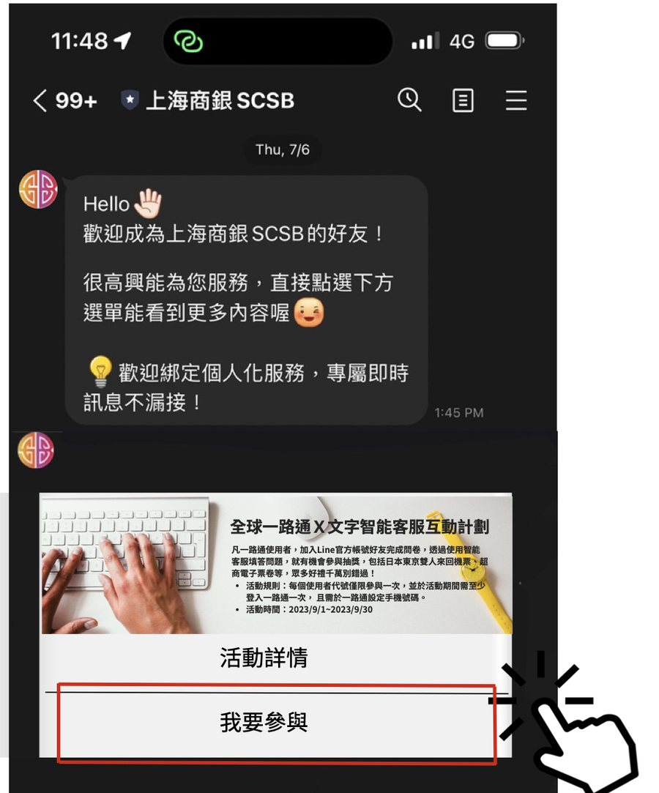
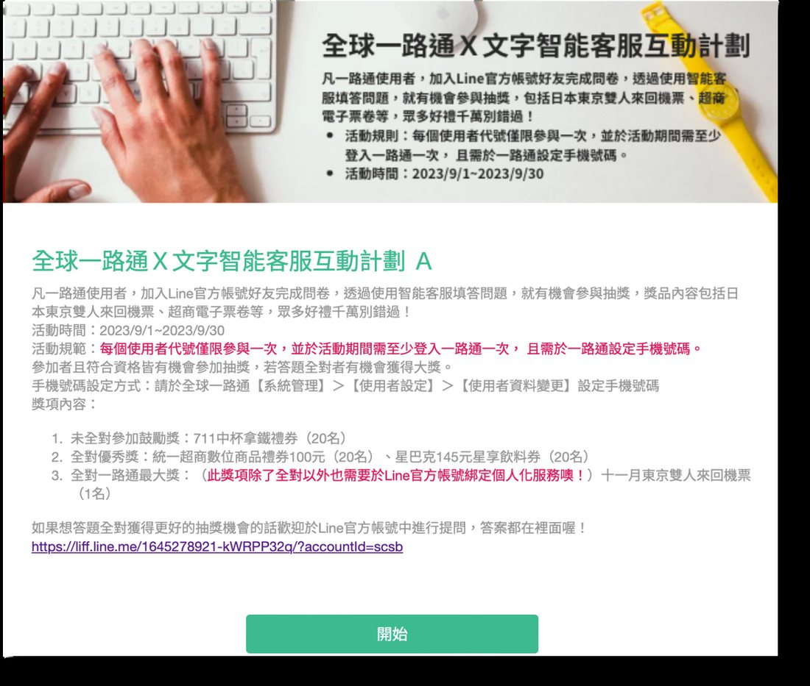

Every topic opens into intro → how-to → follow-ups.
Knowledge Base
Benchmark · restructure · fill the gaps243 → 415 answers, linked into paths
The bot drew on a flat Q&A list with gaps and vague answers. After benchmarking two leading banks’ bots, I rebuilt it into a structured knowledge base.
Each entry also got 10 example questions and 3+ keywords for testing.
What leading bank chatbots did better
Before fixing anything, I checked what good looks like: I asked SCSB’s, CTBC’s and Cathay United’s chatbots the same customer questions, scored each answer out of 10, and turned the gaps into five fixes.
| Feature | SCSB | CTBC | Cathay |
|---|---|---|---|
| Short answer before a link | ✗ | ✓ | ✓ |
| Suggestions while typing | ✗ | ✗ | ✓ |
| Nearest branch / ATM lookup | ✗ | ✗ | ✓ |
| LINE account linked to bot | ✗ | ✓ | ✓ |
SCSB’s gap: answers sent users to links and hotlines, with no live chat as a fallback.
Suggest questions as users type
A short answer before any link; the biggest win
A consistent, friendly voice
Ask “was this helpful?” to find weak answers
Use backend data to suggest services
Each topic links to its follow-ups
Linking each topic to its follow-ups, so users reach the next answer without calling.
Each entry also got 10 example user questions and 3+ keywords for accuracy testing.
Adoption
ProposalA chatbot quiz campaign
A post-launch campaign I proposed to the Digital Banking team: teach clients to use the bot by playing with it.
- Banner · bot · LINE push
- 4-question quiz
- Answers live in the bot
- Lucky draw


What I brought
My role: audit the chatbot, rebuild its knowledge base, and design the campaign that gets clients using it.
Structure the information first; people use a tool when answers are easy to find.